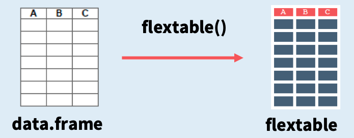
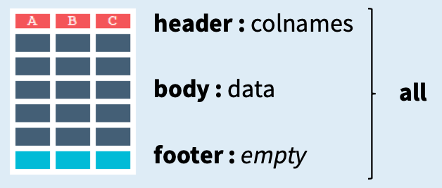

Kapitel 13 Tabellen
Das automatische Erstellen von Tabellen in R bietet eine Reihe von praktischen Vorteilen:
1. Effizienz: Es spart Zeit und reduziert potenzielle Fehlerquellen. Anstatt Tabellen manuell zu erstellen und Daten händisch einzugeben, können Tabellen in R mithilfe von Funktionen und Skripten automatisch generiert werden.
2. Transparenz: Es ermöglicht eine hohe Reproduzierbarkeit. Durch die Verwendung von Skripten kann die Tabellenerstellung dokumentiert und leicht wiederholt werden, was die Transparenz und Nachvollziehbarkeit der Datenanalyse verbessert.
3. Dynamische Veränderbarkeit: Automatisch erstellte Tabellen können einfach aktualisiert werden, wenn neue Daten verfügbar sind, was die Aktualität der Ergebnisse gewährleistet.
Unser Ziel ist es, einen in R verfügbaren Inhalt (z.B. einen data.frame) in eine publikationsfertige Tabelle zu transformieren. Die Tabelle können wir dann z.B. in Word oder Powerpoint Dokumenten weiterverwenden, oder in einem RMarkdown-Skript nutzen, welches uns das Paper automatisch formatiert.
13.1 data.frames
Der einfachste Fall ist es, wenn die zu formatierende Tabelle bereits als data.frame vorliegt. Dieser hat bereits die Struktur einer Tabelle mit Zeilen und Spalten. Das “Verwandeln” eines data.frame in eine Tabelle ist z.B. mit dem Paket flextable möglich.
df = data.frame(Geschlecht = c("männlich", "männlich", "weiblich", "weiblich"),
Konzentration = c(3, 7, 4, 7),
Schlafdauer = c(6, 14, 7, 12),
Schlafqualität = c(5, 8, 2, 1))
df## Geschlecht Konzentration Schlafdauer Schlafqualität
## 1 männlich 3 6 5
## 2 männlich 7 14 8
## 3 weiblich 4 7 2
## 4 weiblich 7 12 1Um den data.frame in eine Tabelle umzubauen, nutzen wir den flextable() Befehl:

Figure 13.1: Von data.frame zur Tabelle
##
## Attaching package: 'flextable'## The following objects are masked from 'package:ggpubr':
##
## border, font, rotate## The following object is masked from 'package:purrr':
##
## composeGeschlecht | Konzentration | Schlafdauer | Schlafqualität |
|---|---|---|---|
männlich | 3 | 6 | 5 |
männlich | 7 | 14 | 8 |
weiblich | 4 | 7 | 2 |
weiblich | 7 | 12 | 1 |
Die Bestandteile der Tabelle sind wie folgt:

Figure 13.2: Bestandteile der Tabelle
Der allgemeine Aufbau einer flextable Funktion lautet:
function(x, i, j, part, args)
- x = flextable Objekt (Ergebnis von
flextable()) - i = Zeilenindex
- j = Spaltenindex,
- part = Tabellenteil (header, body, footer)
- args = spezielle weitere Anpassungen
13.2 Format
Es können diverse Aspekte der Tabelle angepasst werden.
13.2.1 Text
13.2.1.1 Fett schreiben
Zum Verwenden einer fetten Schriftart nutzen wir die bold() Funktion:
Geschlecht | Konzentration | Schlafdauer | Schlafqualität |
|---|---|---|---|
männlich | 3 | 6 | 5 |
männlich | 7 | 14 | 8 |
weiblich | 4 | 7 | 2 |
weiblich | 7 | 12 | 1 |
13.2.1.2 Kursiv schreiben
Zum Verwenden einer kursiven Schriftart nutzen wir die italic() Funktion:
Geschlecht | Konzentration | Schlafdauer | Schlafqualität |
|---|---|---|---|
männlich | 3 | 6 | 5 |
männlich | 7 | 14 | 8 |
weiblich | 4 | 7 | 2 |
weiblich | 7 | 12 | 1 |
13.2.1.3 Textgröße anpassen
Zur Veränderung der Textgröße nutzen wir die fontsize() Funktion:
Geschlecht | Konzentration | Schlafdauer | Schlafqualität |
|---|---|---|---|
männlich | 3 | 6 | 5 |
männlich | 7 | 14 | 8 |
weiblich | 4 | 7 | 2 |
weiblich | 7 | 12 | 1 |
13.2.1.4 Textfarbe anpassen
Zur Veränderung der Textfarbe nutzen wir die color() Funktion:
Geschlecht | Konzentration | Schlafdauer | Schlafqualität |
|---|---|---|---|
männlich | 3 | 6 | 5 |
männlich | 7 | 14 | 8 |
weiblich | 4 | 7 | 2 |
weiblich | 7 | 12 | 1 |
13.2.2 Zellen
13.2.2.1 Alignment
Um den Text in der Zelle auszurichten nutzen wir die align() Funktion. Die Argumente sind “left”, “right” und “center”.
Geschlecht | Konzentration | Schlafdauer | Schlafqualität |
|---|---|---|---|
männlich | 3 | 6 | 5 |
männlich | 7 | 14 | 8 |
weiblich | 4 | 7 | 2 |
weiblich | 7 | 12 | 1 |
Um den Text in der Zelle vertikal auszurichten nutzen wir die valign() Funktion. Die Argumente sind “top” und “bottom”.
Geschlecht | Konzentration | Schlafdauer | Schlafqualität |
|---|---|---|---|
männlich | 3 | 6 | 5 |
männlich | 7 | 14 | 8 |
weiblich | 4 | 7 | 2 |
weiblich | 7 | 12 | 1 |